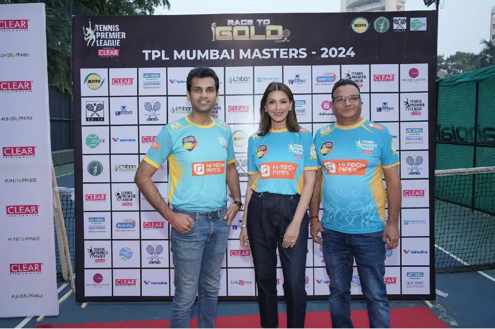
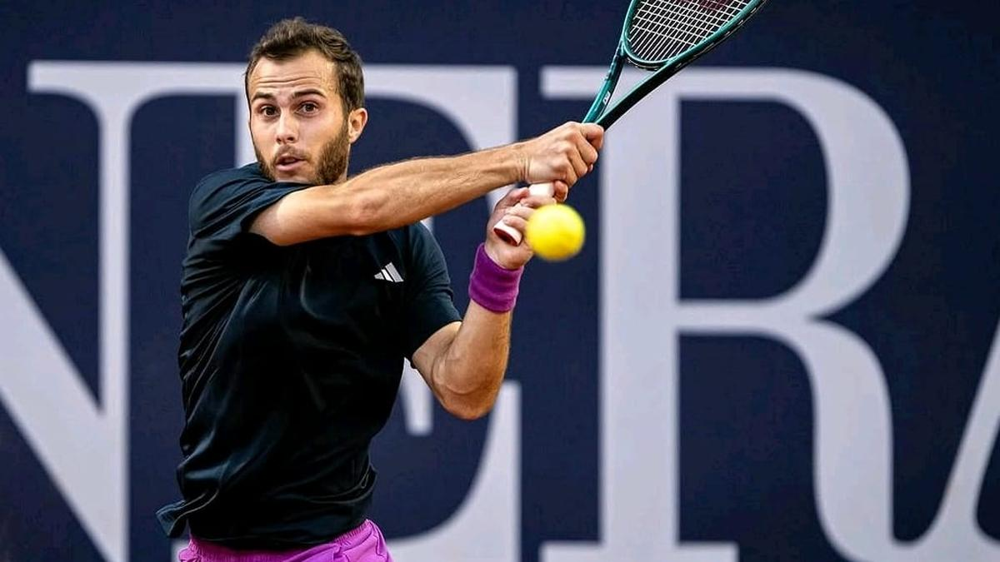
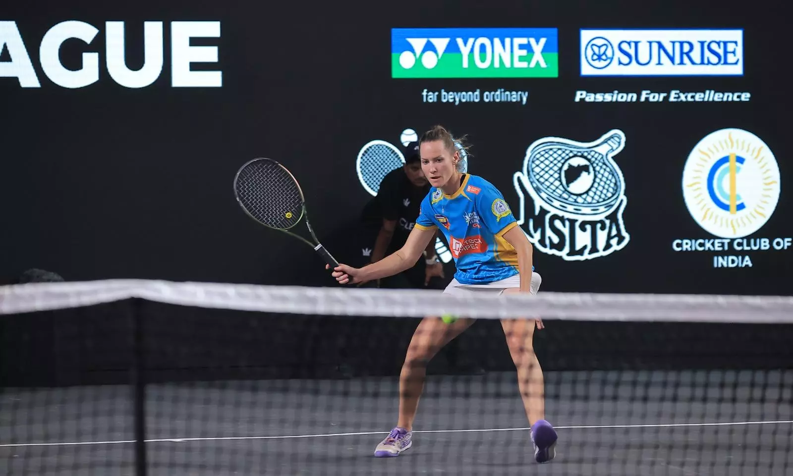

Home
About
Team
News
Gallery
Home
About
Team
News
Gallery
NEWS

Chennai Smashers Join TPL Season 6 with Star Co-Owner Sonali Bendre!
As the Tennis Premier League (TPL) gears up for an electrifying Season 6, the Chennai Smashers make a grand entry with Bollywood actress Sonali Bendre – via Deccan Chronicle

Hugo Gaston excited about his maiden visit to India for TPL
Gaston beat Stan Wawrinka in the third round in five sets. It took Dominik Thiem five sets to beat Gaston in the fourth round. – via The Hindu

Being in Same Era as Nadal, Federer, Djokovic is Very Special Time: Conny Perrin
Swiss tennis player Conny Perrin, who is representing Chennai Smashers in the Tennis Premier League Season 6, feels it as "very special time" - via Deccan Chronicle